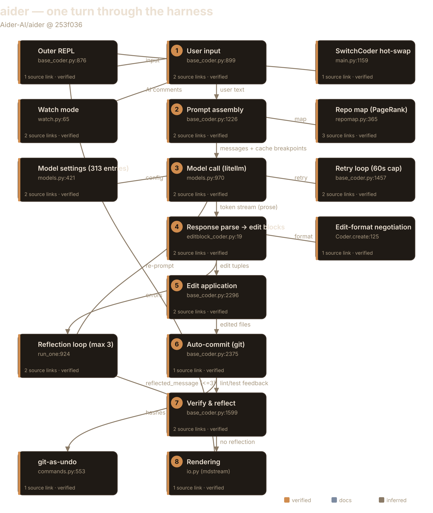
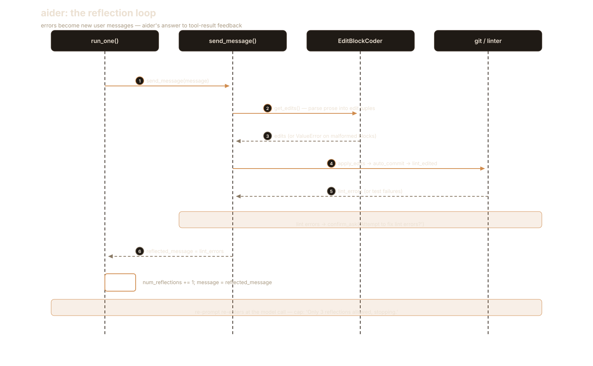
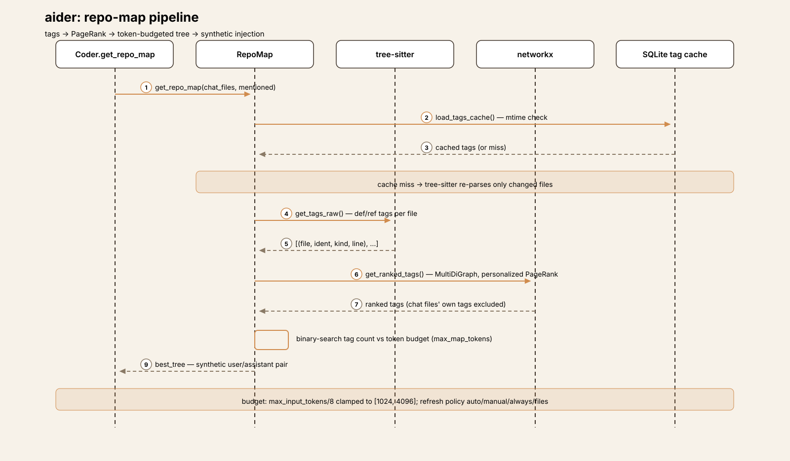
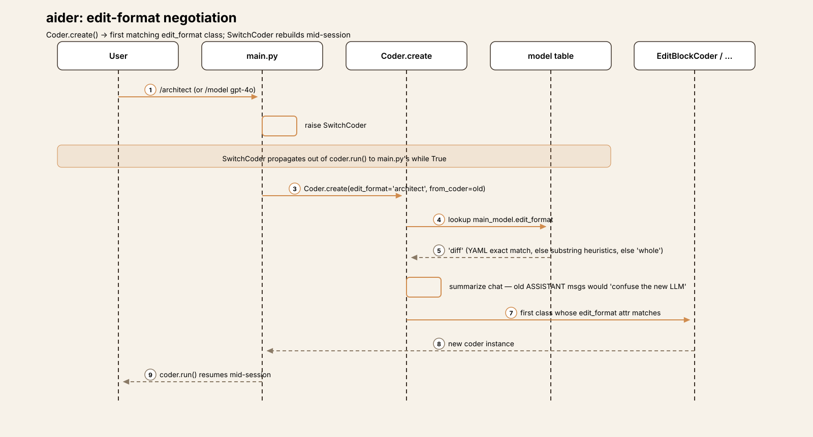
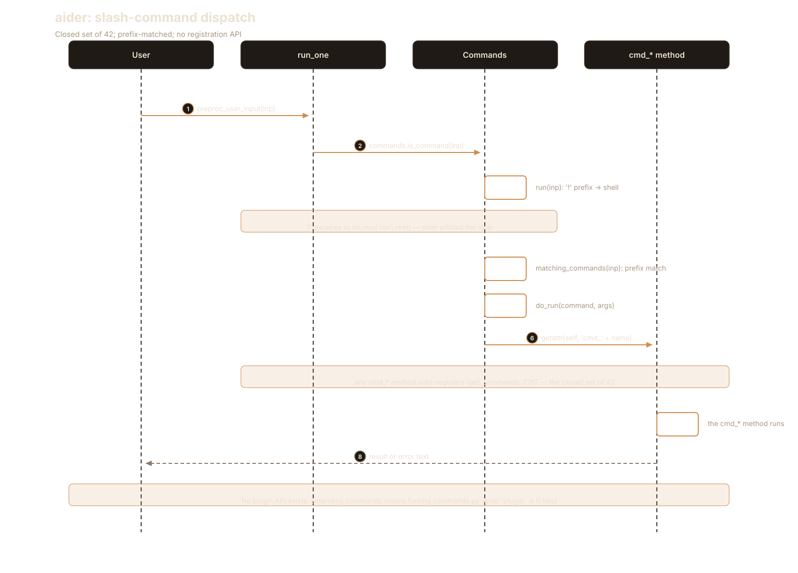
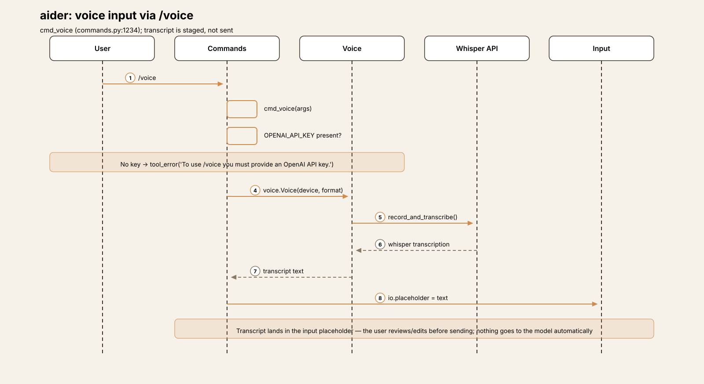
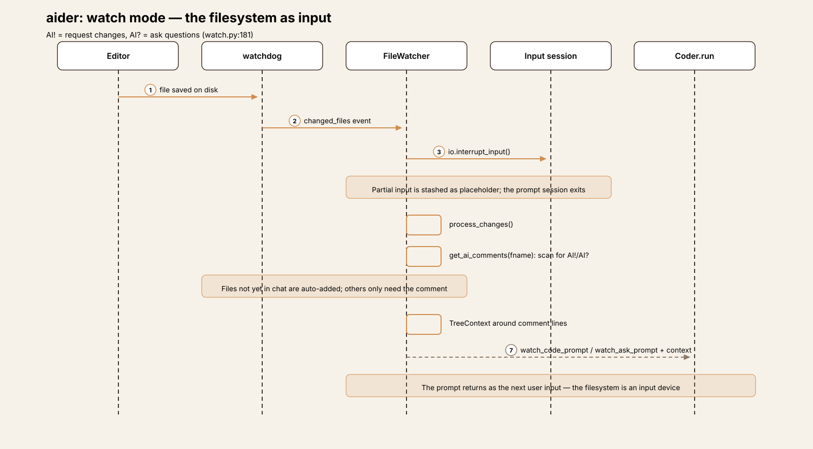

Agent Harness Anatomy #2: aider — the pair programmer that parses prose
Series: Agent Harness Anatomy — top-down dissections of real agent harnesses, grounded in verifiable source code. Every behavioral claim below carries a footnote to a pinned GitHub permalink; the full evidence lives in the endnotes.
Version block
- Repo: Aider-AI/aider
- Pinned: tag
v0.86.2→253f0368b873ba30d8ee26e463718f0c03614ddf(2026-02-11) - Language: Python (146
.pyfiles, 38,158 LOC —aider/20,237 ·tests/12,306 ·scripts/3,152 ·benchmark/2,463) - License: Apache-2.0
- Claim under test: "AI pair programming in your terminal"

The mental model
aider is a text-format-negotiating pair programmer: one LLM call per turn, then a deterministic parse→apply→verify pipeline, with git as the undo system.1 There is no tool-call loop. The model never calls tools — it emits prose (SEARCH/REPLACE edit blocks, unified diffs, whole-file rewrites), and aider parses that prose, applies it to files, lints and tests the result, and reflects any errors back as new user messages.2
This inverts pi's bet from article #1. Where pi hands the model a typed tool protocol and stays rigorously model-agnostic, aider hands the model formatting conventions and compensates with deep model-specific knowledge: a 313-entry compatibility table plus substring heuristics that decide, per model, which edit format to use, whether to send a repo map, and how to place reminders.3 The tradeoff is load-bearing. Text formats work with any model that can follow instructions — no function-calling API required, which mattered enormously when aider was designed — but every format is a brittle contract that must be tuned per model. pi's thesis was "mechanism in the core, policy in extensions." aider's is closer to: the model does the acting; aider does the parsing, the verifying, and the remembering which models need which format.
Package map
Single-package layout (aider/), not pi's monorepo. Dependency direction:
main.py → coders/ (the loop) → models.py/llm.py (providers),
repomap.py, repo.py, commands.py, io.py, history.py,
linter.py.2
| Module | LOC | Role |
|---|---|---|
coders/base_coder.py |
2,485 | THE loop, prompt assembly, edit application |
commands.py |
1,694 | 42 slash commands, SwitchCoder hot-swap |
models.py |
1,323 | Model compat table (YAML + heuristics), litellm calls |
main.py |
1,274 | CLI entry, mode dispatch, coder construction |
repomap.py |
867 | PageRank repo map (tree-sitter + networkx) |
io.py |
~700 | prompt_toolkit input, watch/clipboard hooks |
history.py |
143 | background-thread chat summarization |
diffs.py |
128 | streaming whole-file diff display helper |
gui.py |
— | streamlit browser GUI (alt interface) |
watch.py |
~310 | watchdog file watcher ("AI comments") |
voice.py |
— | whisper voice input |
Entry is aider/__main__.py → main() at main.py:451.1
The core loop
Three nested levels, and naming them correctly is the whole article:
- Outer REPL —
Coder.run()(base_coder.py:876):while True:read input viaget_input()→run_one(...). KeyboardInterrupt goes tokeyboard_interrupt()(Ctrl+C twice within 2 seconds exits); EOFError returns.4 One level up,main.pywrapscoder.run()in its ownwhile Truethat catchesSwitchCoder— raised by/model,/architect,/askand friends — to hot-swap the coder, model, or edit format mid-session.5 - Reflection loop —
run_one()(base_coder.py:924):while message:→send_message(message); if anything during the turn setself.reflected_message(malformed edits, lint errors, test errors, files the model mentioned but never added), the loop re-prompts with that text as the new message. Capped bymax_reflections = 3(base_coder.py:101): hit the cap and the turn ends with "Only 3 reflections allowed, stopping."6 - Retry loop — inside
send_message()(base_coder.py:1457):while True:around the actualself.send(...), with exponential backoff (retry_delay *= 2from 0.125s, giving up pastRETRY_TIMEOUT = 60inmodels.py:26). Context-window exhaustion is not retried; output-length truncation triggers an assistant-prefill continuation if the model supports it.7
def run_one(self, user_message, preproc):
self.init_before_message()
if preproc:
message = self.preproc_user_input(user_message)
else:
message = user_message
while message:
self.reflected_message = None
list(self.send_message(message))
if not self.reflected_message:
break
if self.num_reflections >= self.max_reflections:
self.io.tool_warning(f"Only {self.max_reflections} reflections allowed, stopping.")
return
self.num_reflections += 1
message = self.reflected_message
The most interesting negative finding: there is no max-iteration,
max-step, or max-turn cap on the REPL itself — the only numeric bound in
the system is max_reflections = 3 on the re-prompt loop.8 But unlike
pi, where a missing cap is a live trust decision (a runaway model burns
tokens until Ctrl+C), aider's loop can't really doom-loop: each turn is
exactly one LLM call followed by a deterministic pipeline. The reflection
cap bounds re-prompts, and the REPL just waits for the next human input.
The dangerous loop in a tool-calling harness doesn't exist here because
the model is never handed the steering wheel — it only ever writes prose.

One turn, end to end
Trace: the user types add error handling to foo.py with foo.py
already /added to the chat (default edit format diff, model gpt-4o).
① Input. Coder.run() → get_input() (base_coder.py:899,
prompt_toolkit via io.get_input at io.py:523) → run_one(…,
preproc=True) → preproc_user_input (:912): slash-command check,
then check_for_file_mentions on the user's text, then URL
detection.9
② Prompt assembly. send_message() (:1419) → format_messages()
(:1333) → format_chat_chunks() (:1226). The wire order is fixed in
ChatChunks.all_messages() (coders/chat_chunks.py:16): system (main
system prompt + examples + reminder) → examples → read-only files →
repo map → done (summarized history) → chat files (the full content
of foo.py) → cur (the user message) → reminder.10 Three things worth
noticing. First, the repo map, read-only files, and chat files are each
sent as synthetic user/assistant pairs — the map is followed by an
assistant message saying "Ok, I won't try and edit those files without
asking first."11 The model is being stage-managed with fake
conversation. Second, prompt-cache breakpoints are attached via
add_cache_control_headers (:28): system/examples, repo(+readonly),
chat files — the stable prefixes, exactly the sections cheapest to
cache.10 Third, check_tokens() asks "Try to proceed anyway?" if the
assembled prompt exceeds the model's context window (:1415), and
warm_cache() arms a background thread that will keep the cache alive
with real max_tokens=1 LLM calls on a ~5-minute timer (:1340).12
The tradeoff: aider's prompt is a performance, assembled fresh every turn from a dozen sources with cache geometry baked in — versus pi's diffed, versioned system-prompt protocol. aider re-sends everything and leans on prompt caching to make it cheap; pi sends deltas. Both are answers to the same token-economics problem, from opposite directions.
③ Model call. send() (:1783) → Model.send_completion()
(models.py:970) → litellm.completion(model="gpt-4o", …); tokens
stream through show_send_output_stream, or arrive whole via
show_send_output.13 No function/tool calling — the edits come back
as SEARCH/REPLACE text blocks inside the prose.
④ Response parsing. EditBlockCoder.get_edits()
(coders/editblock_coder.py:19) → find_original_update_blocks()
(:439): scans the response for <<<<<<< SEARCH / ======= /
>>>>>>> REPLACE fenced blocks and resolves the target filename from
the 3 preceding lines — exact match, then basename, then difflib 0.8
fuzzy, then any dotted name.14 ```bash blocks are
intercepted separately: they yield (None, shell_content) tuples,
collected into self.shell_commands (:33) for confirmed execution
later — the model's "run this" suggestions never execute inline.14
⑤ Edit application. apply_updates() (:2296) runs
get_edits(), then a dry run, then prepare_to_edit, then
apply_edits() which writes the files. do_replace() (:364) tries
exact match → leading-whitespace-flexible match → ... elision handling
(try_dotdotdots). Blocks that match nothing raise ValueError with a
"SearchReplaceNoExactMatch" report including "did you mean" similar
lines from find_similar_lines — and that error text becomes the next
reflection.15
Seam worth knowing: replace_most_similar_chunk (:157) has a bare
return sitting before the call to replace_closest_edit_distance
— the edit-distance fuzzy fallback is dead code. Only
exact/whitespace/... matching actually runs. The function reads like
it has four strategies; it has three.15
⑥ Commit. auto_commit() (:2375) → repo.commit(fnames,
context=cur_messages, aider_edits=True) — every applied turn becomes a
git commit with an LLM-written message. The hash is tracked in
aider_commit_hashes, which is what powers /undo.16 Then
move_back_cur_messages() (:1036) retires the turn's messages into
history and kicks off background summarization (more below).17
⑦ Verify & reflect. Post-apply feedback (:1599-1622): if
auto_lint, lint_edited() (:1681) runs per-language lint commands
(linter.py:82, from resources/lint-commands.json, falling back to a
basic_lint) — on errors, aider asks "Attempt to fix lint errors?" and,
on yes, sets reflected_message = lint_errors, sending the linter's
complaints back to the model as a new user message (reflection 1 of
≤3).18 Then run_shell_commands(): each model-suggested shell block
requires explicit per-command confirmation
(explicit_yes_required=True, :2456); output is optionally appended
to the chat as a user/assistant pair. Then the auto_test command runs
the same confirm→reflect cycle for test failures.18
⑧ Rendering. Tokens stream live via mdstream
(io.get_assistant_mdstream); after applying, aider prints "Applied
edit to foo.py" and — if the turn moved HEAD — a /undo hint
(show_undo_hint, :2404).19 Rendering is imperative throughout:
there is no event stream for interfaces to subscribe to, which is why
the streamlit GUI re-implements display logic instead of observing
it.20
Subsystem inventory
- Repo map (signature subsystem).
repomap.py:42. The pipeline: - Tag extraction (
get_tags_raw,:279): tree-sitter queries per language (queries/dir) producedef/reftags per file, cached in SQLite at.aider.tags.cache.v{CACHE_VERSION}(:42-43) with mtime invalidation (load_tags_cache,:217). - Personalized PageRank (
get_ranked_tags,:365): anetworkx.MultiDiGraphof the repo's files, edges referencer→definer weighted by identifier heuristics — mentioned identifiers ×10, long snake/kebab/camelCase names ×10,_private×0.1, defined-in-many-files ×0.1, referencer-in-chat ×50, ref counts sqrt-scaled. The personalization vector boosts chat files, mentioned files, and path-component matches; chat files' own tags are excluded from the output. - Token budgeting (
get_ranked_tags_map_uncached,:629): binary search over tag count (initial guessmax_map_tokens // 25), rendering each candidate tree and token-counting it — with a sampling estimator for chunks over 200 chars (:89) — accepting the first within 15% of budget or the best under it. Budget defaults tomax_input_tokens/8clamped to [1024, 4096] (models.py:767-774). - Rendering (
to_tree:748,render_tree:710): per-file ctags-style listings with lines of interest; mtime-keyedtree_cache. - Injection (
get_repo_map,base_coder.py:709): personalized on the current message's mentioned files and identifiers, with a triple fallback — personalized → global unhinted → fully unhinted (:709-745). - Refresh policy (
:600-610):manualfreezes the last map,alwaysregenerates,filescaches on file sets,autoregenerates only when the previous build took over 1 second (map_processing_time > 1.0), keyed on chat plus mentions.21

This is aider's answer to "how does the model see the codebase" — algorithmic, token-budgeted, and re-personalized every turn. pi's answer is "it doesn't, unless you put files in context or write a skill." Neither is obviously right: aider pays tree-sitter + PageRank compute on every session so the model can navigate unprompted; pi pays nothing and makes context the user's job.
- Edit formats. Each format is a
Codersubclass selected by itsedit_formatclass attribute;Coder.create()(base_coder.py:125) picks the first class whose attribute matches, defaulting tomain_model.edit_formatfrom the model table.22
| Format | Coder | Parse |
|---|---|---|
diff |
EditBlockCoder (:13) |
SEARCH/REPLACE blocks, fuzzy filename |
udiff |
UnifiedDiffCoder (:46) |
unified diff hunks, normalize_hunk |
whole |
WholeFileCoder (:10) |
full-file fenced rewrites |
patch |
PatchCoder (:210) |
*** Begin Patch sentinels; *** Update/Add/Delete File: actions with @@ context chunks and tracked fuzz — tolerant of missing sentinels |
ask |
AskCoder (:5) |
read-only Q&A (no apply_updates) |
architect |
ArchitectCoder (:6) |
plan → user-confirmed → editor coder |
context |
ContextCoder (:5) |
repo Q&A with map |
Format switching (/architect, /ask, /code, /context) raises
SwitchCoder; main.py rebuilds the coder, summarizing chat
history when the format changes because old ASSISTANT messages
would "confuse the new LLM" (base_coder.py:163-176).23 Architect
is aider's closest thing to sub-agents: sequential two-model
delegation (architect plans, editor executes) with a user gate —
"Edit the files?" (architect_coder.py:11-48) — synchronous and
confirmed, not autonomous.24

- Model layer.
models.py:Modelwraps litellm. Compatibility comes from two tables:resources/model-settings.yml(313 models, user-overridable via--model-settings-file,models.py:142-146) → exact match, thenapply_generic_model_settings()(:421): dozens of substring heuristics ("/o3-mini" in model,"gpt-4" in model, …) settingedit_format,use_repo_map,streaming,use_temperature,reasoning_tag, reminder placement. Fallback defaults live on the dataclass:edit_format="whole",use_repo_map=False(:119-123).25 The weak model (default gpt-4o-mini per the YAML) handles commit messages and summarization;simple_send_with_retries(:1024) tries[weak_model, main_model]in order.26
Seams worth knowing: system_prompt_prefix is assigned twice in a
row (:426-427) — harmless, but it signals how this function grows
by accretion. And the "gpt-3.5" in model or "gpt-4" in model branch
(:511) is partly dead: an earlier "gpt-4" in model branch returns
first, so the gpt-4 half never fires. In a 1,323-line file of
per-model special cases, dead branches are the tax on being
model-aware.25
-
Session & history. Two message lists:
cur_messages(the live turn) vsdone_messages(history).move_back_cur_messages()retires the turn and starts background-thread summarization (summarize_start:1002;ChatSummaryover[weak_model, main_model], budgetclamp(max_input_tokens/16, 1024, 8192));summarize_end()(:1024) joins that thread insideformat_chat_chunks— a slow summarization blocks prompt assembly, not the model call.27 Persistence is a markdown log,.aider.chat.history.md, in the git root (args.py:274), reloadable via--restore-chat-history. No compaction, no sessions directory — pi's JSONL sessions plus compaction versus aider's markdown log plus summarization.27 -
Watch mode.
FileWatcher(watch.py:65, watchdog, background thread) starts when the input prompt shows (io.py:649); on change it interrupts input (io.interrupt_input,io.py:516) andprocess_changes()(watch.py:181) scans forAI!/AI?code comments, adds the files to chat, and builds a prompt with tree context around the comment lines — returned as the "user input". The filesystem is an input device. A clipboard watcher (copypaste.py) does the same for pastes.28 -
Interfaces. prompt_toolkit CLI (
io.py) is primary;--message/--message-filefor one-shots;--applyapplies an edit file without involving the model at all.gui.pyis a streamlit browser GUI wrapping the sameCoder.20 -
Failure handling. Exponential-backoff retry (60s cap) on transient litellm errors; no retry on context-window exhaustion (asks the user to proceed anyway); output-length truncation → assistant-prefill continuation; malformed edits → reflected error text (≤3 reflections); lint/test failures → confirm → reflected errors; double-Ctrl+C exits.729
-
Security model. Inverted versus pi: edits to chat files apply with no prompt. Prompts appear only at the boundary — "Create new file?" (
:2207), "Allow edits to file that has not been added to the chat?" (:2226), every suggested shell command (explicit_yes_required=True,:2456). The safety net is git auto-commit plus/undo, not approvals — and there is no sandboxing of any kind at runtime.30 -
Telemetry. Mixpanel + PostHog (
analytics.py:55-56). Mentioned for completeness; keys are redacted here and it doesn't touch the loop.31
Extension points
Here's the finding that shapes this whole section: aider's extension surface is configuration, not code. There is no plugin API to learn — extending aider means editing settings, switching formats, or forking.
- Slash commands (closed set).
commands.pyholds 42 slash commands; anycmd_*method auto-registers (get_commands,:276) and dispatches by prefix match indo_run(:288), with a!prefix escaping to shell.32 The set is the product:/add/drop/read-only(context management),/model/editor-model/weak-model(SwitchCoder hot-swap),/architect/ask/code/context(format switches),/undo(reverts only aider's own commits — checksaider_commit_hashes, refuses dirty files and multi-parent commits,:553-600),/diff/commit/lint/test/run,/map/map-refresh,/tokens,/voice(whisper, needsOPENAI_API_KEY,:1234),/web(scrape),/paste,/copy-context,/settings,/report.32 Start here: readcmd_addandcmd_undo— context management and git-backed undo are the two commands every other feature orbits.


- Model settings YAML. The 313-entrymodel-settings.yml is the
closest thing aider has to a plugin manifest: per-model edit
format, repo-map on/off, streaming, temperature, reminder placement —
overridable per deployment with --model-settings-file.25
Start here: copy the file, change one model's edit_format,
and watch the whole prompt contract change. That's the leverage
point pi's extensions would occupy.
- Edit formats (fork to extend). New formats are new Coder
subclasses with an edit_format attribute and get_edits() /
apply_edits() implementations — selected by Coder.create()
(:125). There is no registry API; adding a format means editing
the coders/ package.22 Start here: patch_coder.py — the
newest format, and the most tolerant parser, is the best template.
- Watch mode. Filesystem-as-input via watch.py and the AI!
comment convention — the one axis where aider accepts ambient,
non-conversational input.28 Start here: process_changes()
(watch.py:181).

What you cannot do without forking: add a hook into the loop (no hook system exists), register a tool (there is no tool protocol — the model writes prose), load an MCP server (no MCP client exists),33 or add a skill pack (no skill loader exists).34 pi's answer to "I want new behavior" is an extension point; aider's is a config flag, a slash command, or a fork. That's not a deficiency — it's the price of the text-format bet: when the contract with the model is prose conventions, the harness's job is prompt engineering and parsing, and there's simply less machinery to plug into.
Deliberate omissions
| Capability | pi (v1.0.2) | aider (v0.86.2) |
|---|---|---|
| Tool calling | Native: 4 built-ins + registry, schema-validated, parallel | None. Model emits text edit blocks; aider parses prose |
| MCP | Wraps MCP servers as native tools | Absent (grep aider/*.py + coders/*.py → 0 hits) |
| Plugin/extension API | TS extensions, hooks at every seam | Absent (grep "plugin" → 0 hits); 42 commands are a closed list |
| Skills | Skill dirs + frontmatter + /skill: |
Absent (grep "skill" → 0 hits) |
| Sub-agents | Deliberately omitted | Architect ≈ sequential 2-model delegation with a user gate — not autonomous |
| Approval prompts | beforeToolCall hook (extensible) |
Boundary-only (new files, external files, shell); chat-file edits auto-apply |
| Sandbox | Relies on extension policy | None at runtime |
| Session format | JSONL under ~/.pi/agent/sessions/ |
Markdown log .aider.chat.history.md in the repo |
| Compaction | core/compaction/ branch summarization |
Background-thread summarization (weak model first) |
| Interfaces | TUI / print / RPC / SDK on one event stream | prompt_toolkit CLI + streamlit GUI; imperative rendering |
| Repo map | None (explicit context) | Signature subsystem (PageRank + tree-sitter) |
| Model compat | Model-agnostic StreamFn |
313-entry YAML + substring heuristics (load-bearing) |
| Auto-commit | No | Every turn → git commit (undoable) |
| Iteration cap | None | None on REPL; max_reflections = 3 on re-prompt |
| Watch mode | No | Filesystem as input (AI! comments) |
Read the omissions as aider's thesis restated: everything pi externalizes into an extension system, aider either bakes into the single package (repo map, lint/test loops, watch mode) or declines to have (tools, MCP, skills, plugins). The bet is that a pair programmer needs fewer extension axes, not more — the model's prose is the universal interface, and the harness's job is to parse it faithfully, verify it mechanically, and commit it reversibly.
Comparison matrix row
| # | Dimension | aider (v0.86.2) |
|---|---|---|
| 1 | Agent loop | No tool-call loop; parse→apply→reflect over text edit formats; REPL + reflection (≤3) + retry; no REPL iteration cap 468 |
| 2 | Tool system | None — model emits SEARCH/REPLACE blocks parsed by edit-format coders; shell suggestions run only with per-command confirmation 1418 |
| 3 | Model providers | litellm behind a Model wrapper; 313-entry YAML + substring heuristics (model-aware, load-bearing); weak model for commits/summaries 2526 |
| 4 | Prompt construction | Fixed wire order with synthetic user/assistant pairs; prompt-cache breakpoints on stable prefixes; repo map re-injected per turn 1011 |
| 5 | Memory/session | In-memory cur/done messages; background-thread summarization; markdown log in repo; git auto-commit per turn 1627 |
| 6 | Reasoning/planning | Architect = sequential 2-model delegation with user gate; no autonomous sub-agents 24 |
| 7 | Extensibility | 42 closed slash commands; model-settings YAML; no plugin API, MCP, or skills — configuration, not code 323334 |
| 8 | Interfaces | prompt_toolkit CLI; --message one-shot; streamlit GUI; imperative rendering, no event stream 20 |
| 9 | Failure handling | Exp-backoff retry (60s cap); no retry on context exhaustion; malformed edits reflected (≤3); lint/test confirm loops 718 |
| 10 | Security model | Chat-file edits auto-apply; prompts only at boundaries; git auto-commit + /undo; no sandbox 30 |
Endnotes
All notes are VERIFIED against v0.86.2
(253f0368b873ba30d8ee26e463718f0c03614ddf) unless marked otherwise.
GH = https://github.com/Aider-AI/aider/blob/253f0368b873ba30d8ee26e463718f0c03614ddf/.
Next in the series: Cline — where the same ten dimensions meet the IDE extension host.
-
Entry:
aider/__main__.pydelegates tomain()at GH…/main.py#L451. ↩↩ -
Single-package layout; dependency direction
main.py→coders/→models.py/llm.py,repomap.py,repo.py,commands.py,io.py,history.py,linter.py, per the module table (LOC verified withwc -lat the pinned tree253f0368b873ba30d8ee26e463718f0c03614ddf:coders/base_coder.py2485,commands.py1694,models.py1323,main.py1274,repomap.py867,history.py143,aider/diffs.py128). ↩↩ -
resources/model-settings.ymlholds 313 model entries (counted by YAML parse at the pinned tree); user override via--model-settings-file(GH…/models.py#L142-L146). ↩ -
Coder.run()at GH…/base_coder.py#L876 (while True:→get_input()→run_one(...));KeyboardInterrupt→keyboard_interrupt()(double-Ctrl+C within 2s exits),EOFError→ return. ↩↩ -
main.pywrapscoder.run()inwhile True, catchingSwitchCoderto rebuild the coder mid-session, at GH…/main.py#L1159-L1164. ↩ -
run_one()reflection loop at GH…/base_coder.py#L924-L944;max_reflections = 3at L101; cap message: "Only 3 reflections allowed, stopping." ↩↩ -
Retry loop inside
send_message()at GH…/base_coder.py#L1457-L1490 (retry_delay *= 2, give up pastRETRY_TIMEOUT = 60at GH…/models.py#L26);ContextWindowExceededError→ exhausted (no retry);FinishReasonLength→ assistant-prefill continuation when the model supports it. ↩↩↩ -
Negative finding: case-insensitive grep for
max_iter|max_steps|max_turnsoveraider/at the pinned SHA253f0368b873ba30d8ee26e463718f0c03614ddfreturns onlymax_reflections— no iteration cap on the REPL. ↩↩ -
Input path:
get_input()at GH…/base_coder.py#L899 viaio.get_inputat GH…/io.py#L523;preproc_user_inputat L912 (slash-command check,check_for_file_mentions, URL detection). ↩ -
send_message()at GH…/base_coder.py#L1419 →format_messages()at L1333 →format_chat_chunks()at L1226; wire order inChatChunks.all_messages()at GH…/coders/chat_chunks.py#L16-L27 (system → examples → readonly → repo → done → chat_files → cur → reminder); cache breakpoints inadd_cache_control_headersat L28. ↩↩↩ -
Repo map and read-only/chat files are injected as synthetic user/assistant pairs in
get_repo_messages()at GH…/base_coder.py#L750-L762, including the assistant message "Ok, I won't try and edit those files without asking first." ↩↩ -
check_tokens()asks "Try to proceed anyway?" at GH…/base_coder.py#L1415;warm_cache()at L1340 arms a background thread sending reallitellm.completioncalls withmax_tokens=1on a ~5-minute timer (delay = 5 * 60 - 5, overridable viaAIDER_CACHE_KEEPALIVE_DELAY), warning but continuing on error. ↩ -
send()at GH…/base_coder.py#L1783 →Model.send_completion()at GH…/models.py#L970 →litellm.completion(...); streaming viashow_send_output_stream. ↩ -
EditBlockCoder.get_edits()at GH…/coders/editblock_coder.py#L19-L33;find_original_update_blocks()at L439 (filename from the 3 preceding lines: exact → basename → difflib 0.8 fuzzy → any dotted name);```bashblocks yield(None, shell_content)intoself.shell_commands(:33). ↩↩↩ -
apply_updates()at GH…/base_coder.py#L2296 (dry run →prepare_to_edit→apply_edits);do_replace()at GH…/coders/editblock_coder.py#L364 (exact → whitespace-flexible →...elision viatry_dotdotdots); failures raiseValueErrorwith "SearchReplaceNoExactMatch" plusfind_similar_linessuggestions. Seam:replace_most_similar_chunk(:157) returns beforereplace_closest_edit_distance(:184) — the fuzzy fallback is dead code. ↩↩ -
auto_commit()at GH…/base_coder.py#L2375 →repo.commit(..., aider_edits=True); hashes tracked inaider_commit_hashes(powers/undo). ↩↩ -
move_back_cur_messages()at GH…/base_coder.py#L1036 retires turn messages and starts background summarization. ↩ -
Post-apply feedback at GH…/base_coder.py#L1599-L1622;
lint_edited()at L1681, per-language lint in GH…/linter.py#L82 (commands fromresources/lint-commands.json); shell blocks run withexplicit_yes_required=Trueat L2456. ↩↩↩↩ -
Streaming render via
io.get_assistant_mdstream;/undohint inshow_undo_hint()at GH…/base_coder.py#L2404. ↩ -
gui.pyimports streamlit (GH…/gui.py#L7) and wraps the sameCoder; rendering is imperative — no event stream exists for interfaces to subscribe to. ↩↩↩ -
Repo map pipeline: tag extraction in
get_tags_rawat GH…/repomap.py#L279, SQLite cache.aider.tags.cache.v{CACHE_VERSION}at L42-L43 (load_tags_cacheat L217); personalized PageRank inget_ranked_tagsat L365 (identifier weights: mentioned ×10, long snake/kebab/camelCase ×10,_private×0.1, defined-in->5-files ×0.1, referencer-in-chat ×50, sqrt-scaled ref counts); token budgeting by binary search inget_ranked_tags_map_uncachedat L629 (initial guessmax_map_tokens // 25, sampling estimator past 200 chars at L89, accept within 15%); rendering viato_treeat L748 andrender_treeat L710; budgetmax_input_tokens/8clamped to [1024, 4096] inget_repo_map_tokensat GH…/models.py#L767-L774; refresh policy (manual/always/files/auto, auto regenerates past 1s processing) at GH…/repomap.py#L601-L610. ↩ -
Coder.create()at GH…/base_coder.py#L125-L160 (first class whoseedit_formatmatches wins; default frommain_model.edit_format); format classes:EditBlockCoder(diff) at GH…/coders/editblock_coder.py#L15,UnifiedDiffCoder(udiff) at GH…/coders/udiff_coder.py#L46,WholeFileCoder(whole) at GH…/coders/wholefile_coder.py#L10,PatchCoder(patch) at GH…/coders/patch_coder.py#L210,AskCoder(ask) at GH…/coders/ask_coder.py#L5,ArchitectCoder(architect) at GH…/coders/architect_coder.py#L6,ContextCoder(context) at GH…/coders/context_coder.py#L5.PatchCoderparses*** Begin Patch/*** End Patchsentinels with*** Update File:/*** Add File:/*** Delete File:actions and@@context chunks (fuzz tracked on thePatchdataclass), tolerating missing sentinels when the content is patch-like (GH…/coders/patch_coder.py#L217-L260). ↩↩ -
Format-switch summarization in
Coder.create()at GH…/base_coder.py#L163-L176 (old ASSISTANT messages would "confuse the new LLM"). ↩ -
ArchitectCoder(extendsAskCoder) at GH…/coders/architect_coder.py#L6-L48: plan → user-confirmed ("Edit the files?") → editor coder. Synchronous delegation, not autonomous sub-agents. ↩↩ -
apply_generic_model_settings()at GH…/models.py#L421 (substring heuristics settingedit_format,use_repo_map,streaming,use_temperature,reasoning_tag, reminder placement); fallback defaultsedit_format="whole",use_repo_map=Falseon theModelSettingsdataclass at L119-L123. Seams:system_prompt_prefixassigned twice at L426-L427; the"gpt-3.5" in model or "gpt-4" in modelbranch at L511 is partly dead — an earlier"gpt-4" in modelbranch returns first. ↩↩↩↩ -
simple_send_with_retries()at GH…/models.py#L1024 tries[weak_model, main_model]in order; weak model defaults to gpt-4o-mini permodel-settings.yml. ↩↩ -
summarize_start()at GH…/base_coder.py#L1002 spawns the background thread;summarize_end()at L1024 joins it insideformat_chat_chunks— a slow summarization blocks prompt assembly. History budgetmax_chat_history_tokens = clamp(max_input_tokens/16, 1024, 8192). Persistence:.aider.chat.history.mdin the git root (GH…/args.py#L274), reloadable with--restore-chat-history. ↩↩↩ -
FileWatcherat GH…/watch.py#L65 starts when the input prompt shows (GH…/io.py#L649); on change it interrupts input (io.interrupt_inputat GH…/io.py#L516) andprocess_changes()at GH…/watch.py#L181 scans forAI!/AI?comments, adds the files to chat, and builds a prompt with tree context around the comment lines. ↩↩ -
Double-Ctrl+C exit in
keyboard_interrupt()at GH…/base_coder.py#L983-L998 (2-second threshold between interrupts). ↩ -
No per-edit approval:
apply_updates()(GH…/base_coder.py#L2296) contains noconfirm_ask; prompts exist only at boundaries — "Create new file?" at L2207, "Allow edits to file that has not been added to the chat?" at L2226, shell commands at L2456. Negative finding: case-insensitive grep forsandbox|chroot|firejail|bubblewrapoveraider/*.pyandaider/coders/*.pyreturns zero hits (thedocker/dir holds dev-container files only). ↩↩ -
Telemetry: Mixpanel + PostHog initialized at GH…/analytics.py#L55-L56 (keys redacted here). ↩
-
42
cmd_*methods (counted at the pinned tree); auto-registration inget_commands()at GH…/commands.py#L276, prefix dispatch indo_run()at L288;/undoat L553-L600 (reverts only aider's own commits: checksaider_commit_hashes, refuses dirty files and multi-parent commits);/voiceat L1234 (whisper, needsOPENAI_API_KEY). ↩↩↩ -
Negative finding: case-insensitive grep for
mcpoveraider/*.pyandaider/coders/*.pyat the pinned SHA253f0368b873ba30d8ee26e463718f0c03614ddfreturns zero hits — no MCP client exists. ↩↩ -
Negative finding: case-insensitive grep for
skilloveraider/*.pyat the pinned SHA253f0368b873ba30d8ee26e463718f0c03614ddfreturns zero hits — no skill loader exists. (Same scope forplugin: zero hits — no plugin API.) ↩↩